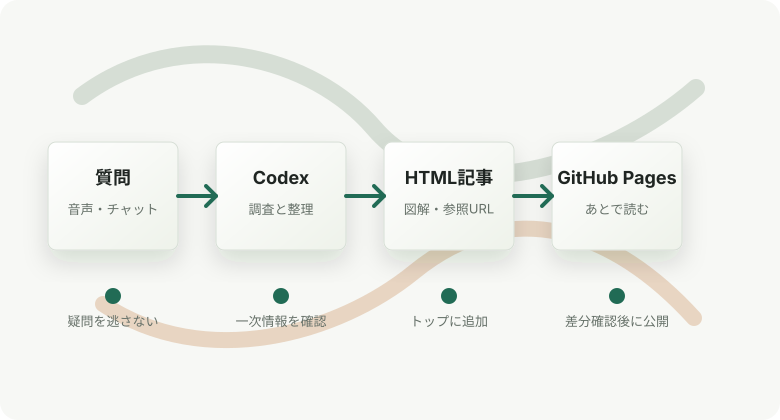

Codexと育てる技術ノートの始め方
このリポジトリで技術ノートを増やすための構成、記事作成ルール、公開前チェックをまとめます。
Personal Technical Notes
移動中や作業中に浮かんだ技術的な疑問を、Codexで調査・図解・参照付きの記事として蓄積します。 ビルド不要の静的HTMLなので、GitHub Pagesや任意の静的ホスティングでそのまま公開できます。

Notes
このリポジトリで技術ノートを増やすための構成、記事作成ルール、公開前チェックをまとめます。
Workflow
Codexが一次情報を確認し、HTML記事として読みやすく整理します。
公開前に本文、図解、出典、秘匿情報の混入がないことを人間が確認します。
HTML/CSS/画像だけの構成なので、ビルドなしで静的サイトとして配信できます。